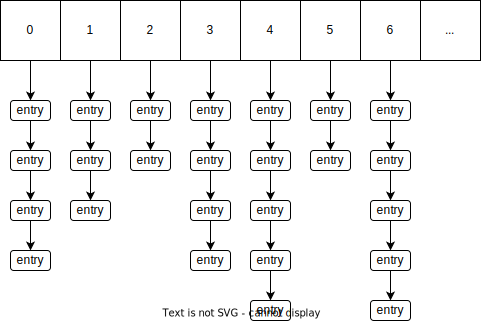

KDOC 190: 『Rubyのしくみ Ruby Under a Microscope』
DONE この文書のステータス
- 作成
- 2024-07-19 貴島
- レビュー
- 2024-07-20 貴島
概要
Rubyのしくみ Ruby Under a Microscopeは、Rubyの言語処理系を解説する本。
メモ
RubyVM::InstructionSequenceを使うと、プログラム中からRubyのYARVエンジンにアクセスできる(p48)
puts RubyVM::InstructionSequence.compile('1 + 2').disasm
== disasm: #<ISeq:<compiled>@<compiled>:1 (1,0)-(1,5)> (catch: FALSE) 0000 putobject_INT2FIX_1_ ( 1)[Li] 0001 putobject 2 0003 opt_plus <calldata!mid:+, argc:1, ARGS_SIMPLE> 0005 leave
code = <<END 10.times do |n| puts n end END puts RubyVM::InstructionSequence.compile(code).disasm
== disasm: #<ISeq:<compiled>@<compiled>:1 (1,0)-(3,3)> (catch: FALSE) == catch table | catch type: break st: 0000 ed: 0005 sp: 0000 cont: 0005 | == disasm: #<ISeq:block in <compiled>@<compiled>:1 (1,9)-(3,3)> (catch: FALSE) | == catch table | | catch type: redo st: 0001 ed: 0006 sp: 0000 cont: 0001 | | catch type: next st: 0001 ed: 0006 sp: 0000 cont: 0006 | |------------------------------------------------------------------------ | local table (size: 1, argc: 1 [opts: 0, rest: -1, post: 0, block: -1, kw: -1@-1, kwrest: -1]) | [ 1] n@0<Arg> | 0000 nop ( 1)[Bc] | 0001 putself ( 2)[Li] | 0002 getlocal_WC_0 n@0 | 0004 opt_send_without_block <calldata!mid:puts, argc:1, FCALL|ARGS_SIMPLE> | 0006 nop | 0007 leave ( 3)[Br] |------------------------------------------------------------------------ 0000 putobject 10 ( 1)[Li] 0002 send <calldata!mid:times, argc:0>, block in <compiled> 0005 nop 0006 leave ( 1)
- 一度Rubyコンパイラが実行されると、ブロックパラメータに関する情報はASTの外、ローカルテーブルと呼ばれる別のデータ構造にコピーされ、新しく生成されたYARV命令列の近くに保存される。各YARV命令、つまりRubyプログラムの各スコープは専用のローカルスコープを持つ(p50)
code = <<END def add_two(a, b) sum = a+b end END puts RubyVM::InstructionSequence.compile(code).disasm
== disasm: #<ISeq:<compiled>@<compiled>:1 (1,0)-(3,3)> (catch: FALSE) 0000 definemethod :add_two, add_two ( 1)[Li] 0003 putobject :add_two 0005 leave == disasm: #<ISeq:add_two@<compiled>:1 (1,0)-(3,3)> (catch: FALSE) local table (size: 3, argc: 2 [opts: 0, rest: -1, post: 0, block: -1, kw: -1@-1, kwrest: -1]) [ 3] a@0<Arg> [ 2] b@1<Arg> [ 1] sum@2 0000 getlocal_WC_0 a@0 ( 2)[LiCa] 0002 getlocal_WC_0 b@1 0004 opt_plus <calldata!mid:+, argc:1, ARGS_SIMPLE> 0006 dup 0007 setlocal_WC_0 sum@2 0009 leave ( 3)[Re]
デフォルト引数。
code = <<END def add_two_opt(a, b = 99) sum = a+b end END puts RubyVM::InstructionSequence.compile(code).disasm
== disasm: #<ISeq:<compiled>@<compiled>:1 (1,0)-(3,3)> (catch: FALSE) 0000 definemethod :add_two_opt, add_two_opt ( 1)[Li] 0003 putobject :add_two_opt 0005 leave == disasm: #<ISeq:add_two_opt@<compiled>:1 (1,0)-(3,3)> (catch: FALSE) local table (size: 3, argc: 1 [opts: 1, rest: -1, post: 0, block: -1, kw: -1@-1, kwrest: -1]) [ 3] a@0<Arg> [ 2] b@1<Opt=0> [ 1] sum@2 0000 putobject 99 ( 1) 0002 setlocal_WC_0 b@1 0004 getlocal_WC_0 a@0 ( 2)[LiCa] 0006 getlocal_WC_0 b@1 0008 opt_plus <calldata!mid:+, argc:1, ARGS_SIMPLE> 0010 dup 0011 setlocal_WC_0 sum@2 0013 leave ( 3)[Re]
キーワード引数。
code = <<END def add_two_opt(a, b: 99) sum = a+b end END puts RubyVM::InstructionSequence.compile(code).disasm
== disasm: #<ISeq:<compiled>@<compiled>:1 (1,0)-(3,3)> (catch: FALSE) 0000 definemethod :add_two_opt, add_two_opt ( 1)[Li] 0003 putobject :add_two_opt 0005 leave == disasm: #<ISeq:add_two_opt@<compiled>:1 (1,0)-(3,3)> (catch: FALSE) local table (size: 4, argc: 1 [opts: 0, rest: -1, post: 0, block: -1, kw: 1@0, kwrest: -1]) [ 4] a@0<Arg> [ 3] b@1 [ 2] ?@2 [ 1] sum@3 0000 getlocal_WC_0 a@0 ( 2)[LiCa] 0002 getlocal_WC_0 b@1 0004 opt_plus <calldata!mid:+, argc:1, ARGS_SIMPLE> 0006 dup 0007 setlocal_WC_0 sum@3 0009 leave ( 3)[Re]
- YARVは途中の値や引数、返り値を把握するために内部的にスタックを利用する。YARVはスタック志向な仮想マシンである、という。内部スタックに加えて、Rubyプログラムのコールスタックも把握し続ける。どのメソッドが他のメソッド、関数、ブロックやラムダなどを呼び出したか記録される。YARVは二重スタックマシンである(p62)

Figure 1: YARV命令列、YARVが管理するフレーム、内部レジスタの関係図(p62参考)
Figure 2: スタックフレームの積み重なるイメージ(p62参考)
- Rubyは新しいプログラムを開始する際、まずはじめにTOPフレームを生成する。EVALというタイプのフレームは、Rubyスクリプトのトップレベルのスコープに対応している(p67)
- Rubyは
pubobjectやsendといったすべてのYARV命令をCを使って実装している。しかしCソースファイル内に各YARV命令のコードはない。そのかわり、insns.def(define instruction)という単一の巨大なファイル内にYARV命令のCソースコードを記述している、という。ほとんどの部分はCではない。ビルド処理の中でinsns.defの内容をCコードへと変換する(p68)- YARV命令定義(
insns.defファイル) -> プリプロセス -> YARV Cコード(vm.incファイル) - RubyはRubyを使って
insns.defを処理し、vm.incというCソースコードを生成する。そして生成したCソースコードとあわせて、まずは小さなminirubyというコマンドをビルドし、これを用いて大きなRubyコマンドを作っていく
- YARV命令定義(
https://github.com/kd-collective/ruby/blob/dd04def10f22296c9a98b4d796c100b9ad4e2388/insns.def#L348-L356
/* put self. */ DEFINE_INSN putself () () (VALUE val) { val = GET_SELF(); }
- RubyコアチームはRuby1.9からYARV仮想マシンを導入した。Rubyの初期のバージョンはASTのノードを直接たどることでプログラムを実行していた。Rubyはただ字句解析と構文解析を行い、すぐにコードを実行していた。コンパイラと新しい仮想マシンを導入したのは、速度だ。YARVを使用してコンパイルされたRubyプログラムを実行すると、直接ASTをたどるよりはるかに高速にプログラムを実行できる(p71)
- Rubyは変数に保存した値すべてを、YARV命令列の引数や返り値と一緒にYARVスタックに保存する。しかしこれらの変数へのアクセスはそう単純ではない。変数の値を読み書きしやすくするために、Rubyはローカル変数アクセスと動的変数アクセスという2つの全く異なる方法を用いる、という(p74)
- ローカル変数アクセス(p74)
- Rubyは現在のメソッドにおける特殊変数のテーブルへのポインタか、現在のレキシカルスコープへのポインタのいずれかをsvar/crefに含める
- スタック上のスペースに値を書き込むために、環境ポインタ(EP)を使う。このポインタは現在のメソッド用のローカル変数がスタック上のどこにあるかをポイントする。スタックポインタ(SP)の値がYARV命令を実行することによって変化しても、EPの値はそこにとどまる
code = <<END def display_string str1 = "Local access." puts str1 end END puts RubyVM::InstructionSequence.compile(code).disasm
== disasm: #<ISeq:<compiled>@<compiled>:1 (1,0)-(4,3)> (catch: FALSE) 0000 definemethod :display_string, display_string( 1)[Li] 0003 putobject :display_string 0005 leave == disasm: #<ISeq:display_string@<compiled>:1 (1,0)-(4,3)> (catch: FALSE) local table (size: 1, argc: 0 [opts: 0, rest: -1, post: 0, block: -1, kw: -1@-1, kwrest: -1]) [ 1] str1@0 0000 putstring "Local access." ( 2)[LiCa] 0002 setlocal_WC_0 str1@0 0004 putself ( 3)[Li] 0005 getlocal_WC_0 str1@0 0007 opt_send_without_block <calldata!mid:puts, argc:1, FCALL|ARGS_SIMPLE> 0009 leave ( 4)[Re]

Figure 3: setlocal, getlocalを図で見る
- 動的変数アクセス(p78)
- 異なるスコープで定義された変数を使用しようとした場合にRubyは動的変数アクセスを行う。たとえばブロックの内側かブロックの外側の変数にアクセスしようとしたとき
code = <<END def display_string str = "Dynamic access." 10.times do puts str end end END puts RubyVM::InstructionSequence.compile(code).disasm
== disasm: #<ISeq:<compiled>@<compiled>:1 (1,0)-(6,3)> (catch: FALSE) 0000 definemethod :display_string, display_string( 1)[Li] 0003 putobject :display_string 0005 leave == disasm: #<ISeq:display_string@<compiled>:1 (1,0)-(6,3)> (catch: FALSE) == catch table | catch type: break st: 0004 ed: 0009 sp: 0000 cont: 0009 | == disasm: #<ISeq:block in display_string@<compiled>:3 (3,11)-(5,5)> (catch: FALSE) | == catch table | | catch type: redo st: 0001 ed: 0006 sp: 0000 cont: 0001 | | catch type: next st: 0001 ed: 0006 sp: 0000 cont: 0006 | |------------------------------------------------------------------------ | 0000 nop ( 3)[Bc] | 0001 putself ( 4)[Li] | 0002 getlocal_WC_1 str@0 | 0004 opt_send_without_block <calldata!mid:puts, argc:1, FCALL|ARGS_SIMPLE> | 0006 nop | 0007 leave ( 5)[Br] |------------------------------------------------------------------------ local table (size: 1, argc: 0 [opts: 0, rest: -1, post: 0, block: -1, kw: -1@-1, kwrest: -1]) [ 1] str@0 0000 putstring "Dynamic access." ( 2)[LiCa] 0002 setlocal_WC_0 str@0 0004 putobject 10 ( 3)[Li] 0006 send <calldata!mid:times, argc:0>, block in display_string 0009 nop 0010 leave ( 6)[Re]

Figure 4: 動的変数アクセス
puts RubyVM::InstructionSequence.compile('puts 1 + 2').disasm
== disasm: #<ISeq:<compiled>@<compiled>:1 (1,0)-(1,10)> (catch: FALSE) 0000 putself ( 1)[Li] 0001 putobject_INT2FIX_1_ 0002 putobject 2 0004 opt_plus <calldata!mid:+, argc:1, ARGS_SIMPLE> 0006 opt_send_without_block <calldata!mid:puts, argc:1, FCALL|ARGS_SIMPLE> 0008 leave
- スタック内の
EIP-1スロットはこのスタックフレーム内で定義された特殊変数のポインタであるsvarの値を含んでいる。Rubyにおける特殊変数とは、利便性を目的に環境や直前の操作によってRubyが自動で生成した値を参照するもの、だという(p83) $&は明らかにグローバルでない。Rubyはこの振る舞いを可能にするために、特殊変数の集合をスタックのレベルごとにわけて保存している(p84)
str = "The quick brown fox jumps over the lazy dog" /fox/.match(str) def search(str) /dog/.match(str) puts "Value of $& inside method: #{$&}" end search(str) puts "Value of $& top level scope: #{$&}"
Value of $& inside method: dog Value of $& top level scope: fox

Figure 5: 各スタックフレームは専用の特殊変数のセットを持つ
str = "The quick brown fox jumped over the lazy dog.\n" /fox/.match(str) 2.times do /dog/.match(str) puts "Value of $& inside block: #{$&}" end puts "Value of $& in the top-level scope: #{$&}"
Value of $& inside block: dog Value of $& inside block: dog Value of $& in the top-level scope: dog
https://github.com/kd-collective/ruby/blob/dd04def10f22296c9a98b4d796c100b9ad4e2388/parse.y#L9572-L9587
case '~': /* $~: match-data */ case '*': /* $*: argv */ case '$': /* $$: pid */ case '?': /* $?: last status */ case '!': /* $!: error string */ case '@': /* $@: error position */ case '/': /* $/: input record separator */ case '\\': /* $\: output record separator */ case ';': /* $;: field separator */ case ',': /* $,: output field separator */ case '.': /* $.: last read line number */ case '=': /* $=: ignorecase */ case ':': /* $:: load path */ case '<': /* $<: reading filename */ case '>': /* $>: default output handle */ case '\"': /* $": already loaded files */
code = <<END 10.times do |n| puts n break end puts "continue from here." END puts RubyVM::InstructionSequence.compile(code).disasm
== disasm: #<ISeq:<compiled>@<compiled>:1 (1,0)-(5,30)> (catch: TRUE) == catch table | catch type: break st: 0000 ed: 0005 sp: 0000 cont: 0005 | == disasm: #<ISeq:block in <compiled>@<compiled>:1 (1,11)-(4,5)> (catch: TRUE) | == catch table | | catch type: redo st: 0001 ed: 0010 sp: 0000 cont: 0001 | | catch type: next st: 0001 ed: 0010 sp: 0000 cont: 0010 | |------------------------------------------------------------------------ | local table (size: 1, argc: 1 [opts: 0, rest: -1, post: 0, block: -1, kw: -1@-1, kwrest: -1]) | [ 1] n@0<Arg> | 0000 nop ( 1)[Bc] | 0001 putself ( 2)[Li] | 0002 getlocal_WC_0 n@0 | 0004 opt_send_without_block <calldata!mid:puts, argc:1, FCALL|ARGS_SIMPLE> | 0006 pop | 0007 putnil ( 3)[Li] | 0008 throw 2 | 0010 nop | 0011 leave ( 4)[Br] |------------------------------------------------------------------------ 0000 putobject 10 ( 1)[Li] 0002 send <calldata!mid:times, argc:0>, block in <compiled> 0005 nop 0006 pop ( 1) 0007 putself ( 5)[Li] 0008 putstring "continue from here." 0010 opt_send_without_block <calldata!mid:puts, argc:1, FCALL|ARGS_SIMPLE> 0012 leave
- YARVはthrow命令を実行すると、現在のYARV命令シーケンス用のブレークポインタを含む捕捉テーブルがあるかどうかをチェックする。見つからなければ、スタックを繰り返したどる。一度捕捉テーブルへのポインタを見つけると、新しい実行ポイントを反映するために、Rubyコールスタック(CFP)と内部YARVスタックの両方をリセットする。そしてYARVはその地点から処理を継続する(p96)
- returnキーワードも、捕捉テーブルを使用するRubyの一般的な制御構造である。ブロック内でreturnを呼び出す際にはいつでも、Rubyは内部的に例外を送出する。そしてbreakと同じ方法で捕捉テーブルポインタとともにそれを捕捉する。breakとreturnは例外を送出する同じYARV命令を使っている。breakに加えて、rescue, ensure, retry, redo, nextの実装に捕捉テーブルを使用する(p98)
- return -> throw 1
- break -> throw 2
- Rubyがforループをどうコンパイルするか検証する。実際に内部でeachを使ってforループを実装していることを確認できる (p99)
code = <<END for i in 0..5 puts i end END puts RubyVM::InstructionSequence.compile(code).disasm
== disasm: #<ISeq:<compiled>@<compiled>:1 (1,0)-(3,8)> (catch: FALSE) == catch table | catch type: break st: 0000 ed: 0005 sp: 0000 cont: 0005 | == disasm: #<ISeq:block in <compiled>@<compiled>:1 (1,5)-(3,8)> (catch: FALSE) | == catch table | | catch type: redo st: 0005 ed: 0010 sp: 0000 cont: 0005 | | catch type: next st: 0005 ed: 0010 sp: 0000 cont: 0010 | |------------------------------------------------------------------------ | local table (size: 1, argc: 1 [opts: 0, rest: -1, post: 0, block: -1, kw: -1@-1, kwrest: -1]) | [ 1] ?@0<Arg> | 0000 getlocal_WC_0 ?@0 ( 1) | 0002 setlocal_WC_1 i@0 | 0004 nop [Bc] | 0005 putself ( 2)[Li] | 0006 getlocal_WC_1 i@0 | 0008 opt_send_without_block <calldata!mid:puts, argc:1, FCALL|ARGS_SIMPLE> | 0010 nop | 0011 leave ( 3)[Br] |------------------------------------------------------------------------ local table (size: 1, argc: 0 [opts: 0, rest: -1, post: 0, block: -1, kw: -1@-1, kwrest: -1]) [ 1] i@0 0000 putobject 0..5 ( 1)[Li] 0002 send <calldata!mid:each, argc:0>, block in <compiled> 0005 nop 0006 leave ( 1)
- メソッド探索の流れ(p102)
- YARVがsendを呼ぶ
- メソッド探索
- メソッドディスパッチ
- YARVが対象のメソッドを実行する
- Rubyは内部的にメソッドを11種類のタイプに分けて扱っている。メソッドディスパッチの間、Rubyは呼び出そうとしているメソッドのタイプを調べ、そのタイプに従ってそれぞれ異なる呼び出し方をする。YARVはほとんどのメソッドを、ISEQ(命令列)というメソッドタイプとして扱う(p102)
- ISEQ
- CFUNC
- ATTRSET
- IVAR
- BMETHOD
- ZSUPER
- UNDEF
- NOTIMPLEMENTED
- OPTIMIZED
- MISSING
- REFINED
code = <<END def display_message puts "The quick brown fox jumps over the lazy dog." end display_message END puts RubyVM::InstructionSequence.compile(code).disasm
== disasm: #<ISeq:<compiled>@<compiled>:1 (1,0)-(4,17)> (catch: FALSE) 0000 definemethod :display_message, display_message( 1)[Li] 0003 putself ( 4)[Li] 0004 opt_send_without_block <calldata!mid:display_message, argc:0, FCALL|VCALL|ARGS_SIMPLE> 0006 leave == disasm: #<ISeq:display_message@<compiled>:1 (1,2)-(3,5)> (catch: FALSE) 0000 putself ( 2)[LiCa] 0001 putstring "The quick brown fox jumps over the lazy dog." 0003 opt_send_without_block <calldata!mid:puts, argc:1, FCALL|ARGS_SIMPLE> 0005 leave ( 3)[Re]
Figure 6: 単純なメソッド呼び出しのスタックフレームの関係図(p104)
def five_argument_types(a, b = 1, *args, c, &d) puts "Standard argument #{a.inspect}" puts "Optional argument #{b.inspect}" puts "Splat argument array #{args.inspect}" puts "Post argument #{c.inspect}" puts "Block argument #{d.inspect}" end five_argument_types(1, 2, 3, 4, 5, 6) do puts "block" end
Standard argument 1 Optional argument 2 Splat argument array [3, 4, 5] Post argument 6 Block argument #<Proc:0x0000561ae7064340 -:9>
- Rubyはコードをコンパイルすると、各メソッドごとにローカル変数と引数を格納するテーブルを作成する(p105)
- キーワード引数を実装するためにハッシュが使われているのを証明する(p110)
- Rubyは、ユーザが作成したクラスの各オブジェクトを、RObjectというCの構造体に格納する(p116)
- すべてのRubyオブジェクトは、クラスへのポインタとインスタンス変数の配列の組み合わせである、という(p116)
- クラスの2つのインスタンスの可視化の図(p119)
- 整数や文字列、シンボルなどの基本データ型を含むすべての値がオブジェクトである(p119)
- ユーザが定義したクラスをRubyはRObject構造体に保存する
- 一般的なデータ型の各値を保存するために、RubyはRObjectとは異なるC構造体を使用する

Figure 7: RBasic構造体を使うRubyオブジェクト(p120)
- パフォーマンスの最適化のため、Rubyは小さな整数値やシンボルといった単純な値を構造体を使わずVALUEポインタの中に直接保存する。VALUEの下位数ビットに保存したフラグを使ってクラスを記録する(p120)
- 新しいインスタンス変数を保存するのにどれくらいかかるか検証する。オブジェクトごとに新しいクラスを作る(p124)
require 'benchmark' ITERATIONS = 100000 GC.disable obj = ITERATIONS.times.map { Class.new.new } Benchmark.bm do |bench| 20.times do |count| bench.report("adding instance variable number #{count+1}") do ITERATIONS.times do |n| obj[n].instance_variable_set("@var#{count}", "value") end end end end
user system total real adding instance variable number 1 0.021548 0.020863 0.042411 ( 0.042811) adding instance variable number 2 0.022505 0.003532 0.026037 ( 0.026317) adding instance variable number 3 0.023075 0.003734 0.026809 ( 0.027071) adding instance variable number 4 0.024410 0.004075 0.028485 ( 0.028722) adding instance variable number 5 0.031556 0.003862 0.035418 ( 0.035679) adding instance variable number 6 0.020043 0.009000 0.029043 ( 0.029327) adding instance variable number 7 0.022835 0.003691 0.026526 ( 0.026792) adding instance variable number 8 0.031815 0.000680 0.032495 ( 0.032762) adding instance variable number 9 0.035043 0.008684 0.043727 ( 0.044222) adding instance variable number 10 0.027289 0.000000 0.027289 ( 0.027487) adding instance variable number 11 0.027571 0.003536 0.031107 ( 0.031416) adding instance variable number 12 0.015372 0.012116 0.027488 ( 0.027830) adding instance variable number 13 0.028007 0.000680 0.028687 ( 0.029049) adding instance variable number 14 0.031383 0.003799 0.035182 ( 0.035621) adding instance variable number 15 0.025727 0.003518 0.029245 ( 0.029572) adding instance variable number 16 0.015992 0.012207 0.028199 ( 0.028549) adding instance variable number 17 0.049342 0.004136 0.053478 ( 0.054039) adding instance variable number 18 0.023057 0.016051 0.039108 ( 0.039487) adding instance variable number 19 0.016073 0.013158 0.029231 ( 0.029594) adding instance variable number 20 0.026045 0.003476 0.029521 ( 0.029833)
- インスタンス変数はインスタンス変数を1つのオブジェクトに保存する、という。Ruby 1.8ではこの配列は変数名と値のハッシュテーブルであり、その値は要素数がいくらであっても格納できるように自動で拡張されるようになっていた。Ruby 1.9以降ではメモリ削減のために単純な配列に値を保存するようになった。クラスのすべてのインスタンスで共通なインスタンス変数名は、代わりにオブジェクトのクラスに保存されるようになっている。その結果、Ruby 1.9以降では任意の数のインスタンス変数を増やすたびに配列のサイズを繰り返し増やしていく必要がある(p126)
- すべてのオブジェクトは、RClass構造体へのポインタを保存することで自分のクラスを記憶する(p127)
- Rubyクラスの定義(p129)
- メソッド定義のグループを含む
- 属性名のテーブルを含む
- Rubyオブジェクトである
- スーパークラスポインタを含む
- 定数テーブルを含む

Figure 8: クラスの内部的な表現(p139)
> p ObjectSpace.count_objects[:T_CLASS] => 1034 > class Math; end > p ObjectSpace.count_objects[:T_CLASS] => 1036
- ↑新しいクラスを作成するたびに、内部的にRubyは2つのクラスを作成する。第1のクラスは作成した新しいクラスで、定義したクラスを表現するために新しいRClass構造体を生成する。そして内部的にRubyはメタクラスという第2のクラスも生成する、という(p143)

Figure 9: オブジェクトとクラスとメタクラス(p144)
- Rubyにおいてすべてのものはオブジェクトである。プログラム中で値を使用するときにはいつでも、それが何かに関係なく、値はオブジェクトになり、したがってクラスポインタとインスタンス変数を持つ、という(p145)
- Rubyは小さな整数値やシンボルなどに対してC構造体を使わずに単純な値を保存する。VALUEポインタの中に直接保存する。VALUEポインタは通常は構造体へのポインタを保存するために使う、という(p145)
- Rubyにおけるモジュールとクラスの違い(p148)
- モジュールから直接オブジェクトを生成できない。newはClassのメソッドで、Moduleには定義されていない。そのためRubyではモジュールに対してnewメソッドを呼び出せない
- モジュールはスーパークラスを持てない
- includeキーワードを使うと、モジュールをクラスにインクルードできる
- Rubyは内部的に、モジュールをクラスとして実装している。モジュールを定義すると、新しいクラスを作るときと同じようにRClass/rb_classext_struct構造体のペアを作成する(p148)
module Professor end class Mathematician < Person include Professor end
- ↑を実行したとき、RubyはProfessorモジュール用にRClass構造体のコピーを生成し、Mathematicianの新しいスーパークラスとして使う(p150)

Figure 10: includeしたときに起こること(p150)
- Rubyのメソッド探索アルゴリズム。対象のメソッドを含むクラスかモジュールを見つけるまでsuperポインタをたどる(p152)
- Rubyは内部的にクラス継承を使ってモジュールのインクルードを実装している(p156)
- チェーン中のスーパークラスの数に依存して、メソッド探索は時間を消費する。これを軽減するため、Rubyは後で使えるように探索結果をキャッシュする。コードから呼び出されたメソッドを実装しているクラスあるいはモジュールを、グローバルメソッドキャッシュとインラインメソッドキャッシュという2つの方法でキャッシュする(p156)
- Rubyは動的言語なので、好きなときに新しいメソッドを定義できる。メソッド探索の結果が変更になってしまう可能性があるため、これを実現するにはRubyはグローバルとインラインのキャッシュをクリアする必要がある(p158)
- モジュールはRubyプログラム中ではスーパークラスを持てない。しかし内部的にはモジュールはクラスとして表現されるので、Rubyの内部では可能(p161)
- prependを使うとRubyはスーパークラスチェーンで対象クラスの前にモジュールを配置する(p166)
Figure 11: prependは対象クラスの前にモジュールを配置する(p166)
https://github.com/kd-collective/ruby/blob/dd04def10f22296c9a98b4d796c100b9ad4e2388/class.c#L1137-L1160
VALUE
rb_include_class_new(VALUE module, VALUE super)
{
VALUE klass = rb_iclass_alloc(rb_cClass);
RCLASS_M_TBL(klass) = RCLASS_M_TBL(module);
RCLASS_SET_ORIGIN(klass, klass);
if (BUILTIN_TYPE(module) == T_ICLASS) {
module = METACLASS_OF(module);
}
RUBY_ASSERT(!RB_TYPE_P(module, T_ICLASS));
if (!RCLASS_CONST_TBL(module)) {
RCLASS_CONST_TBL(module) = rb_id_table_create(0);
}
RCLASS_CVC_TBL(klass) = RCLASS_CVC_TBL(module);
RCLASS_CONST_TBL(klass) = RCLASS_CONST_TBL(module);
RCLASS_SET_SUPER(klass, super);
RBASIC_SET_CLASS(klass, module);
return (VALUE)klass;
}
- モジュールやクラスを定義するたびに、実は定数も定義されている。そしてモジュールやクラスを参照したり使用するたび、Rubyは関連する定数を探索する必要がある(p173)
- レキシカルスコープは、クラス階層でも他のいずれのスキームでもなく、プログラムの構文的な構造上のコードの区分をさす(p176)
- コンパイルされた各コード片用に、Rubyは親のレキシカルスコープと現在のクラスあるいはモジュールを把握するためのポインタを使用する(p177)
- Rubyはメソッドを見つけるためにスーパークラスを、定数を見つけるために親のレキシカルスコープをそれぞれ使用する(p181)
- 定数探索アルゴリズム(p183)
- レキシカルスコープチェーン内を探索する
- 各スコープのクラスについてautoloadを確認する
- スーパークラスチェーン内を探索する
- 各スーパークラスについてautoloadを確認する
- const_missingを呼ぶ
- autoloadは、与えられた定数が未定義だった場合にRubyに新しいソースファイルを開いて読み込むよう指示するもの(p183)
- クラスやモジュールを定義するときには、継承階層とレキシカルスコープ階層両方にその新しいクラス(かモジュール)を追加する(p184)
- ハッシュテーブルは値を、元の値から計算された整数値に基づいて、バケットと呼ばれるグループに組織化する。値を見つける必要があるときには、ハッシュ値を再計算することでどのバケットにその値があるかを見つけられる。このおかげでハッシュテーブルは検索を高速に行える(p188)
- Ruby1.8と1.9は新しい空のハッシュのために11個のバケットを最初に作成する(p189)
- ハッシュ値をバケット数で割った剰余が、新しいキーと値のペアを保存するバケットの添字となる(p190)
- ハッシュテーブルを使用すると、そのキーのハッシュ値を再計算することでRubyはまっすぐ探しているキーにジャンプできる(p191)
- なぜRubyは11個のバケットに分散しているそれらのデータを高速に検索できるのだろうか。ハッシュ関数が高速でも、Rubyがいくら値をハッシュテーブル内の11個のバケットにむらなく分散させたとしても、100万強の要素があるとしたらターゲットキーを見つけるためにまだ10万の要素の中からバケットを検索しなければならない(p194)
- ゆくゆくは2つ以上の要素が同じバケット内に保存されることになる。そうなるとハッシュ衝突が生じる。これはもはやハッシュ関数に基づいたキーを一意に識別して取り出せないことを意味している(p195)

Figure 12: 各st_table_entry構造体は同一のバケット内の次のエントリへのポインタを含んでいる(p195)
- 値を取得するためには、Rubyは連結リストを順に辿りながらターゲットを各キーと比較していく必要がある(p195)
- 密度が5(RubyのCコード内で定数になっている値)を超えると、Rubyはより多くのバケットを割り当て、新しいバケットを含めた集合に対して再ハッシュ(再分散)する(p196)
require 'benchmark' 100.times do |size| hashes = [] 10000.times do hash = {} (1..size).each do hash[rand] = rand end hashes << hash end GC.disable Benchmark.bm do |bench| bench.report("adding element number #{size+1}") do 10000.times do |n| hashes[n][size] = rand end end end GC.enable end
user system total real
adding element number 1 0.001368 0.000000 0.001368 ( 0.001366)
user system total real
adding element number 2 0.000759 0.000000 0.000759 ( 0.000759)
user system total real
adding element number 3 0.000765 0.000000 0.000765 ( 0.000764)
user system total real
adding element number 4 0.000822 0.000000 0.000822 ( 0.000821)
user system total real
adding element number 5 0.001048 0.000000 0.001048 ( 0.001049)
user system total real
adding element number 6 0.000849 0.000000 0.000849 ( 0.000849)
user system total real
adding element number 7 0.000946 0.000000 0.000946 ( 0.000946)
user system total real
adding element number 8 0.000896 0.000000 0.000896 ( 0.000896)
user system total real
adding element number 9 0.002349 0.003923 0.006272 ( 0.006272)
user system total real
adding element number 10 0.001054 0.000000 0.001054 ( 0.001053)
user system total real
adding element number 11 0.001067 0.000000 0.001067 ( 0.001067)
user system total real
adding element number 12 0.001206 0.000000 0.001206 ( 0.001205)
user system total real
adding element number 13 0.001314 0.000000 0.001314 ( 0.001314)
user system total real
adding element number 14 0.001103 0.000000 0.001103 ( 0.001102)
user system total real
adding element number 15 0.001265 0.000000 0.001265 ( 0.001264)
user system total real
adding element number 16 0.001205 0.000000 0.001205 ( 0.001205)
user system total real
adding element number 17 0.001184 0.000000 0.001184 ( 0.001184)
user system total real
adding element number 18 0.001367 0.000000 0.001367 ( 0.001368)
user system total real
adding element number 19 0.001186 0.000000 0.001186 ( 0.001184)
user system total real
adding element number 20 0.001239 0.000000 0.001239 ( 0.001241)
user system total real
adding element number 21 0.001491 0.000000 0.001491 ( 0.001490)
user system total real
adding element number 22 0.001310 0.000000 0.001310 ( 0.001308)
user system total real
adding element number 23 0.001512 0.000000 0.001512 ( 0.001512)
user system total real
adding element number 24 0.001599 0.000000 0.001599 ( 0.001599)
user system total real
adding element number 25 0.001432 0.000000 0.001432 ( 0.001432)
user system total real
adding element number 26 0.001622 0.000000 0.001622 ( 0.001620)
user system total real
adding element number 27 0.001733 0.000000 0.001733 ( 0.001733)
user system total real
adding element number 28 0.001698 0.000000 0.001698 ( 0.001697)
user system total real
adding element number 29 0.001774 0.000000 0.001774 ( 0.001774)
user system total real
adding element number 30 0.001970 0.000000 0.001970 ( 0.001971)
user system total real
adding element number 31 0.001885 0.000000 0.001885 ( 0.001884)
user system total real
adding element number 32 0.001836 0.000000 0.001836 ( 0.001837)
user system total real
adding element number 33 0.010920 0.000000 0.010920 ( 0.010919)
user system total real
adding element number 34 0.002047 0.000000 0.002047 ( 0.002045)
user system total real
adding element number 35 0.001828 0.000000 0.001828 ( 0.001828)
user system total real
adding element number 36 0.002283 0.000000 0.002283 ( 0.002283)
user system total real
adding element number 37 0.001917 0.000000 0.001917 ( 0.001916)
user system total real
adding element number 38 0.002289 0.000000 0.002289 ( 0.002288)
user system total real
adding element number 39 0.002257 0.000000 0.002257 ( 0.002256)
user system total real
adding element number 40 0.002469 0.000000 0.002469 ( 0.002467)
user system total real
adding element number 41 0.002412 0.000000 0.002412 ( 0.002411)
user system total real
adding element number 42 0.002147 0.000000 0.002147 ( 0.002147)
user system total real
adding element number 43 0.002468 0.000000 0.002468 ( 0.002468)
user system total real
adding element number 44 0.002620 0.000000 0.002620 ( 0.002619)
user system total real
adding element number 45 0.002422 0.000000 0.002422 ( 0.002423)
user system total real
adding element number 46 0.002546 0.000000 0.002546 ( 0.002546)
user system total real
adding element number 47 0.002206 0.000000 0.002206 ( 0.002205)
user system total real
adding element number 48 0.002395 0.000000 0.002395 ( 0.002393)
user system total real
adding element number 49 0.001899 0.000000 0.001899 ( 0.001897)
user system total real
adding element number 50 0.001850 0.000000 0.001850 ( 0.001848)
user system total real
adding element number 51 0.001983 0.000000 0.001983 ( 0.001984)
user system total real
adding element number 52 0.001851 0.000000 0.001851 ( 0.001851)
user system total real
adding element number 53 0.001862 0.000000 0.001862 ( 0.001859)
user system total real
adding element number 54 0.002343 0.000000 0.002343 ( 0.002341)
user system total real
adding element number 55 0.001798 0.000000 0.001798 ( 0.001797)
user system total real
adding element number 56 0.001727 0.000000 0.001727 ( 0.001726)
user system total real
adding element number 57 0.001812 0.000000 0.001812 ( 0.001812)
user system total real
adding element number 58 0.001746 0.000000 0.001746 ( 0.001745)
user system total real
adding element number 59 0.001738 0.000000 0.001738 ( 0.001738)
user system total real
adding element number 60 0.001469 0.000000 0.001469 ( 0.001467)
user system total real
adding element number 61 0.002399 0.000000 0.002399 ( 0.002398)
user system total real
adding element number 62 0.001758 0.000000 0.001758 ( 0.001757)
user system total real
adding element number 63 0.001801 0.000000 0.001801 ( 0.001800)
user system total real
adding element number 64 0.001832 0.000000 0.001832 ( 0.001829)
user system total real
adding element number 65 0.003167 0.011981 0.015148 ( 0.015147)
user system total real
adding element number 66 0.001695 0.000009 0.001704 ( 0.001703)
user system total real
adding element number 67 0.001782 0.000000 0.001782 ( 0.001782)
user system total real
adding element number 68 0.001786 0.000000 0.001786 ( 0.001784)
user system total real
adding element number 69 0.001754 0.000000 0.001754 ( 0.001752)
user system total real
adding element number 70 0.001748 0.000000 0.001748 ( 0.001747)
user system total real
adding element number 71 0.001699 0.000000 0.001699 ( 0.001697)
user system total real
adding element number 72 0.001798 0.000000 0.001798 ( 0.001798)
user system total real
adding element number 73 0.001767 0.000000 0.001767 ( 0.001766)
user system total real
adding element number 74 0.002035 0.000000 0.002035 ( 0.002033)
user system total real
adding element number 75 0.002110 0.000000 0.002110 ( 0.002107)
user system total real
adding element number 76 0.002300 0.000000 0.002300 ( 0.002298)
user system total real
adding element number 77 0.002153 0.000000 0.002153 ( 0.002153)
user system total real
adding element number 78 0.002280 0.000000 0.002280 ( 0.002280)
user system total real
adding element number 79 0.002345 0.000000 0.002345 ( 0.002342)
user system total real
adding element number 80 0.002283 0.000000 0.002283 ( 0.002280)
user system total real
adding element number 81 0.002317 0.000000 0.002317 ( 0.002316)
user system total real
adding element number 82 0.002423 0.000000 0.002423 ( 0.002421)
user system total real
adding element number 83 0.002793 0.000000 0.002793 ( 0.002807)
user system total real
adding element number 84 0.002397 0.000000 0.002397 ( 0.002396)
user system total real
adding element number 85 0.001989 0.000000 0.001989 ( 0.001986)
user system total real
adding element number 86 0.001914 0.000000 0.001914 ( 0.001913)
user system total real
adding element number 87 0.001927 0.000000 0.001927 ( 0.001925)
user system total real
adding element number 88 0.001840 0.000000 0.001840 ( 0.001839)
user system total real
adding element number 89 0.001760 0.000000 0.001760 ( 0.001759)
user system total real
adding element number 90 0.001768 0.000000 0.001768 ( 0.001767)
user system total real
adding element number 91 0.001835 0.000000 0.001835 ( 0.001834)
user system total real
adding element number 92 0.001833 0.000000 0.001833 ( 0.001831)
user system total real
adding element number 93 0.001803 0.000000 0.001803 ( 0.001803)
user system total real
adding element number 94 0.001910 0.000000 0.001910 ( 0.001909)
user system total real
adding element number 95 0.001831 0.000000 0.001831 ( 0.001829)
user system total real
adding element number 96 0.001876 0.000000 0.001876 ( 0.001874)
user system total real
adding element number 97 0.001859 0.000000 0.001859 ( 0.001857)
user system total real
adding element number 98 0.001899 0.000000 0.001899 ( 0.001896)
user system total real
adding element number 99 0.001913 0.000000 0.001913 ( 0.001911)
user system total real
adding element number 100 0.001989 0.000000 0.001989 ( 0.001988)
- ハッシュに含まれる要素が6個以内の場合、Rubyはハッシュ値の計算を確保し、単純に配列内にハッシュデータを保存する(p210)
require 'benchmark' iters = 10000000 Benchmark.bm do |bench| bench.report("iterationg from 1 to 10, many times") do iters.times do sum = 0 i = 1 while i <= 10 sum += i i += 1 end end end end
user system total real iterationg from 1 to 10, one million times 2.182566 0.000000 2.182566 ( 2.182683)
require 'benchmark' iters = 10000000 Benchmark.bm do |bench| bench.report("iterationg from 1 to 10, many times") do iters.times do sum = 0 (1..10).each do |i| sum += i end end end end
user system total real iterationg from 1 to 10, one million times 2.453038 0.000000 2.453038 ( 2.453121)
- ループの繰り返しごとにプログラムカウンタのリセットするだけでよいため、whileの方が早い。本より劇的には変化していない。何かバージョンによる違いがあるのだろうか
- 内部的にRubyはデータを2つの場所、スタックとヒープに保存する(p227)
- スタックはプログラムの各メソッドのローカル変数や返り値、および引数を保存する。スタック上の値はメソッドが実行されている間ののみ有効で、実行が終わると削除される
- メソッド呼び出しから返ったあともしばらくの間必要になる可能性がある情報を保存するとき、Rubyはヒープを使用する
- Rubyはスタック上にデータへの参照のみを保存する
- クロージャは関数が参照している環境、もしくは関数が作られた環境を含んでいる。環境とは、ヒープ内に保存され続ける、スタックフレームのコピーである(p236)
- lambdaによって作成されたスタック上の新しいコピーを編集できる(p239)
- lambdaを呼び出すと、Rubyは内部スタックからヒープにスタックフレームをコピーする
- コピーしたところを指すようにrb_control_frame_t構造体の
EPをリセットする - 次に呼び出すとき、新しい
EPを使用してスタック上の元の値ではなくヒープ内の値にアクセスする。したがって、編集できる
def message_function str = "The quick brown fox" func = lambda do |animal| puts "#{str} jumps over the lazy #{animal}." end str = "The sly brown fox" func end function_value = message_function function_value.call("dog")
The sly brown fox jumps over the lazy dog.
i = 0 increment_function = lambda do puts "incrementing from #{i} to #{i+1}" i += 1 end decrement_function = lambda do i -= 1 puts "decrementing from #{i+1} to #{i}" end increment_function.call decrement_function.call increment_function.call increment_function.call decrement_function.call
incrementing from 0 to 1 decrementing from 1 to 0 incrementing from 0 to 1 incrementing from 1 to 2 decrementing from 2 to 1
- def キーワードを使用してプログラム内にメソッドを定義するため、Rubyは次の3つの処理のステップを踏む(p248)
- それぞれのメソッドの本体を、独立したYARV命令列のコード片にコンパイルする
- 現在のレキシカルスコープを使って、クラスあるいはモジュールのポインタを取得する
- 新しいメソッドの名前をクラスのメソッドテーブルに保存する
- クラスメソッドを定義するときの
selfプレフィックスは、現在のレキシカルスコープではなくプレフィックスで指定したオブジェクトのクラスにメソッドを追加するようRubyに指示する。メタクラスにメソッドが追加されることになる(p249) - クラスメソッドを追加する方法も、メタプログラミングである。クラスのクラス(メタクラス)にメソッドを追加するから(p251)
- Ruby2.0 の Refinements機能はあらかじめ定義したメソッドを、任意のタイミングでクラスに追加できるようにしてくれる(p254)
- トップレベルのレキシカルスコープのクラスはObjectである。つまりスクリプトのトップレベルでメソッドを定義すると、RubyはObjectクラスにメソッドを追加する。Objectは他のすべてのクラスのスーパークラスなので、どこからでも呼び出せる(p259)
- クラスやモジュールのスコープ内では、selfは常にそのクラスかモジュールに設定される。classかmoduleキーワードを使うとRubyは新しいレキシカルスコープを作成する。そして、スコープのクラスを新しいクラスかモジュールに設定する
- メソッド内では、Rubyはselfにそのメソッド呼び出しのレシーバを設定する
- Rubyは eval を呼び出した場所と同じコンテキストで新しいコードの文字列を評価する
a = 2 b = 3 str = "puts" str += " a" str += " +" str += " b" eval(str)
5
a = 2 b = 3 10.times do puts a+b end
5 5 5 5 5 5 5 5 5 5
- 関数にブロックを渡すのと同じように、evalメソッドは「関数」と「関数が参照される環境」、つまりクロージャを作成する(p265)
evalメソッドは第2引数にバインディングを取れる。バインディングとは、関数なしのクロージャ、つまり参照元の環境である。バインディングはYARVスタックフレームへのポインタと考えられる(p266)
def get_binding a = 2 b = 3 binding end eval("puts a+b", get_binding)
5
- 現在のフレームがスタックからポップされた後にevalが呼ばれる可能性があるため、Rubyはヒープにこの環境の持続的なコピーを作成する。この例↑では
get_bindingはすでに返っているにもかかわらず、Rubyはevalによってパース、コンパイルされたコードを実行するときにaとbの値を参照できる(p266)
class Quote def initialize @str = "The quick brown fox" end end str2 = "jumps over the lazy dog." obj = Quote.new obj.instance_eval do puts "#{@str} #{str2}" end # => The quick brown fox jumps over the lazy dog.
- instance_eval は、 eval とほぼ同じだが、与えられた文字列を instance_eval上のレシーバのコンテキスト上で評価するという点が異なる(p269)
- selfポインタは、その時点で実行されているメソッドの所有者であるオブジェクトを示している(p269)
- doを加えてクロージャを導入することは、新しいメソッド内のコードは外側の環境へのアクセス権を持つことを意味している。これはdefキーワードにはない特徴である(p276)
- Rubyにおいてクロージャはブロックやラムダ、Procオブジェクトを動作する中心的な概念である。レキシカルスコープの概念は、Rubyでメソッドを作成してそれをクラスに割り当てるすべての方法を支えている(p278)
- Rubyの内部を学習することはメタプログラミングの概念を確認し、それが何を意味するのかを教えてくれる(p278)
- MRIでは組み込みクラスをC言語で実装している。一方JRubyはすべての組み込みクラスをJavaを使って実装している(p287)
- 処理系によって、性能特性が変化する。コードを長く実行するほど、JVMはコードを最適化し、コードは高速に実行されるものになっていく(p295)
code = <<END str = "hello" END puts RubyVM::InstructionSequence.compile(code).disasm
== disasm: #<ISeq:<compiled>@<compiled>:1 (1,0)-(1,16)> (catch: FALSE) local table (size: 1, argc: 0 [opts: 0, rest: -1, post: 0, block: -1, kw: -1@-1, kwrest: -1]) [ 1] str@0 0000 putstring "hello" ( 1)[Li] 0002 dup 0003 setlocal_WC_0 str@0 0005 leave
流れ。
- putstringでスタック上に文字列を置く
- dupを使ってsetlocalに引数として使うための文字列のコピーを作成する
- strlocal_WC_0を使って文字列をstr変数に保存する
Rubiunisについて。
- Rubiniusは組み込みクラスをRubyで実装している。特定のRubyの機能やメソッドの動きがわからなければ、Rubiniusのコードが理解する助けになる(p309)
- 言語設計者たちが考えること
関連
なし。